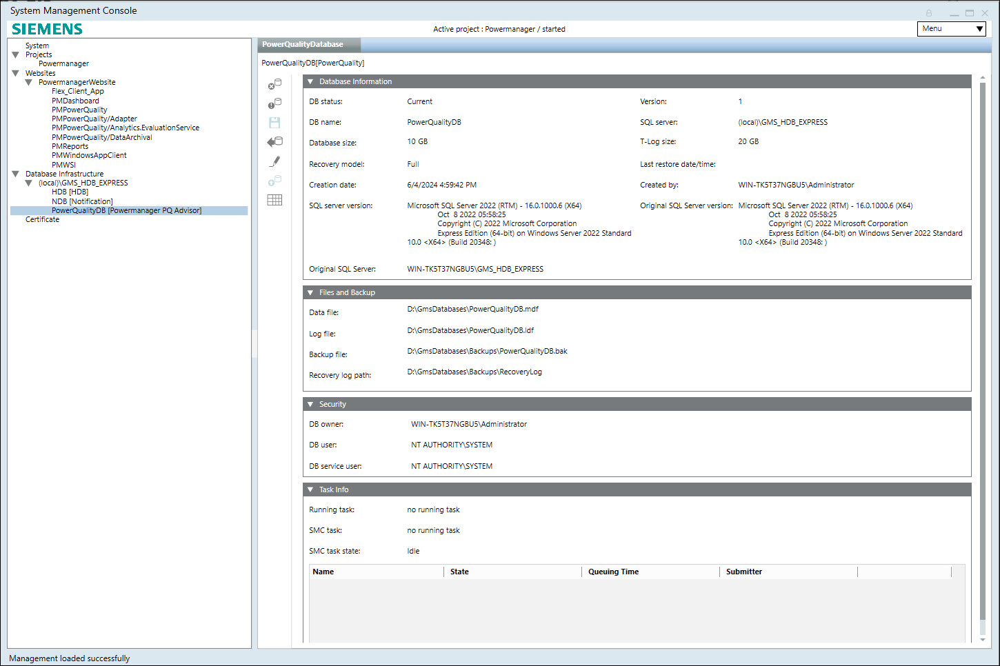
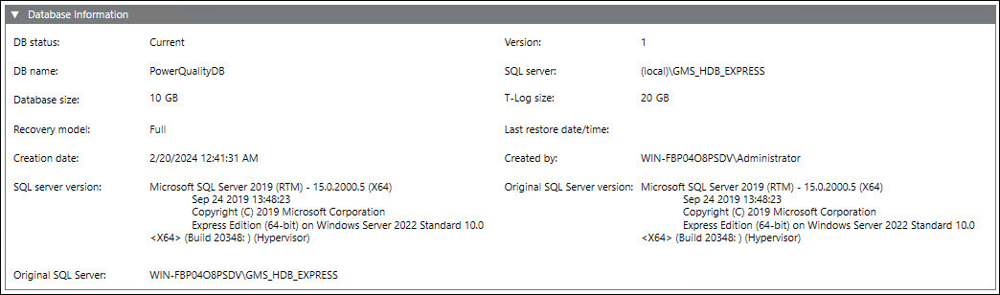
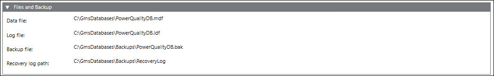
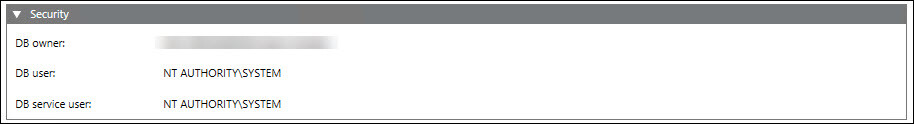
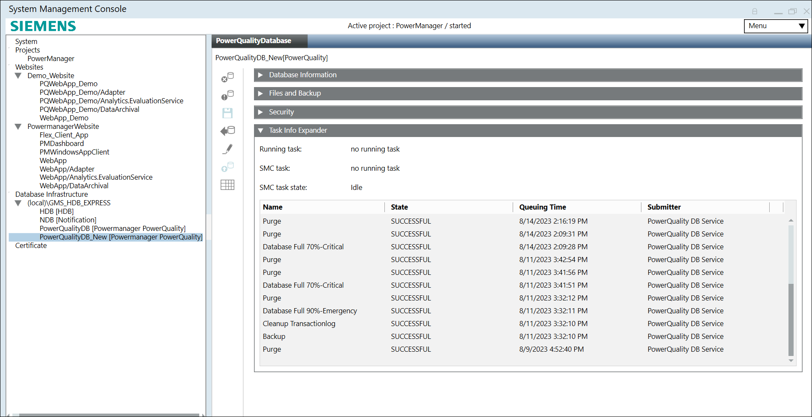
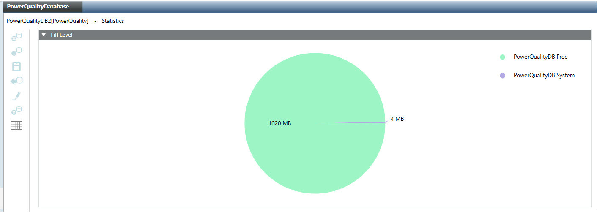

Power Quality Infrastructure Workspace
This section gives an overview of the PowerQuality infrastructure workspace.

Toolbar
PowerQuality Infrastructure Toolbar | ||
Item | Name | Description |
| Drop | Delete an existing PowerQuality Database. |
| Purge | Deletes the data from PowerQuality Database. This function typically is used once following project commissioning. |
| Save | Save the data when: |
| Backup | Back up an PowerQuality Databse to an PowerQuality Database backup file. |
| Edit | Edit an existing PowerQuality Database. |
| Upgrade | Upgrade the PowerQuality Database to a new version. |
| Statistics | Display the memory used by the individual data group. |


Database Information
The Database Information expander displays information on both PowerQuality databases and the SQL Server.

Name | Description |
DB status | Displays the status of the PowerQuality Database: |
DB name | Name of the PowerQuality Database in the project. The following characters are not permitted: /, \, :, *, ?, “, <, >, |, #, @, [, ], {, }, $, !, &, %, +, -, &, (, ), ‘, ~, ;, ,, ., space. |
Database size | Determines the size of the PowerQuality Database (1 to 250 GB). Default is 10 GB: |
Recovery model | Defines the recovery model used for the PowerQuality database (simple or full) (see Recovery Models). You can change the backup model at any time. |
Creation date | Displays date and time when PowerQuality database was created. |
SQL Server version | Displays the currently installed SQL Server version operating with the PowerQuality database. |
Original SQL Server | Displays the service and NamedInstance name applied to the PowerQuality Database. |
Version | Displays the present version of the PowerQuality database. |
SQL Server | Displays the name of the NamedInstance of the SQL Server containing the PowerQuality database. |
T-Log size | Displays the size of the transaction log file. The transaction log file is always twice as large as the PowerQuality Database.
|
Last restore date/time | Displays the date and time of the last restore of the PowerQuality Database. |
Created by | Displays who created the PowerQuality Database. |
Original SQL Server version | Displays the original version of the SQL Server used to create the PowerQuality Database. |
Files and Backup
The Files and Backup expander allows for specifying individual folders and file names for data backup.

Name | Description |
Data file | Folder and file name of data file |
Log file | Folder and file name of the transaction log file |
Backup file | Folder and file name of the PowerQuality database backup file |
Recovery log path | Automatically created backup file is stored at this path. This file can be used to recover the PowerQuality database. |

NOTE 1:
If you do not use the standard paths in the Data file, Log file, Backup file, and Recovery log path fields and if the SQL Server is on a different computer, you must first create the folders before you click Save.
NOTE 2:
The following characters are not permitted in file names: *, ?, “, <, >, |.
Security
The PowerQuality database owner can be changed by stopping and editing the database.
The PowerQuality database user and the PowerQuality database service user are read-only and cannot be changed. For editing users, see SMC System Settings.

Name | Account | Description |
DB Owner | <user defined> | Desigo CC SMC user who requires PowerQuality database owner rights. You can change it as required by stopping and editing database. The PowerQuality database owner must be different than the PowerQuality database user and the PowerQuality database service user. |
DB user | System | Desigo CC project user who requires PowerQuality database user rights for read and write operations. You can change it as required in SMC > System > Management tab > Settings expander > System Account Settings, assign required user in system account. For more information, refer System Account Settings. |
DB service user | PowerQuality Database service | Desigo CC service user who requires PowerQuality database service user rights for maintenance operations. You can change it as required in SMC > System > Management tab > Services expander > Siemens GMS PQDB Service > Service Account, assign required user for service account. For more information, refer Services Expander. |
Task Info
The Task Info expander displays pending tasks or tasks to be executed by the Siemens GMS PowerQuality database Service. It also displays information on the tasks that have been previously executed by the Siemens GMS PowerQuality database Service along with the execution status. This information is online and is not stored.
The Task Info displays the latest 20 tasks, and is updated continuously. Planned, Interrupted, Running, and Hot tasks are kept for troubleshooting.
This information is not available in Desigo CC client applications.

|
Name | Description |
Running task | Displays the currently operating, automated tasks as well as tasks initiated from the System Management Console, for example Backup. The date of the last action is displayed to the right. |
SMC task | Displays the tasks started on the System Management Console, for example, Backup. The date of the last action is displayed to the right. |
SMC task state | Displays the state of tasks to be run:
|
Purge |
|
Database Full 50% - Warning |
|
Database Full 70%- Critical |
|
Database Full 90% - Emergency |
|
Statistics
The Fill Level expander displays the pie chart which shows free and consumed memory in PowerQuality database.

Green color indicates the free space.
Purple color indicates the space consumed.
Upgrade
- If you upgrade the Powermanager to the latest version from an earlier version and are using PQ EM’s, check whether the PQDB upgrade button is enabled in SMC. If it is enabled, click the Upgrade button to upgrade the PQDB. For more information, see section Upgrading PQDB under Additional Power Quality Database procedures.